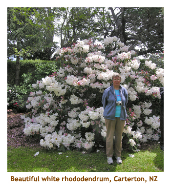
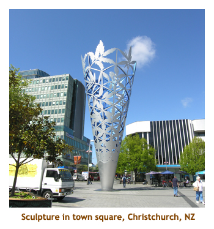
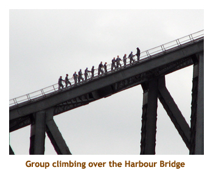

[ Home ] [ Travel ] [ Photography ] [ Pets ] [ Games] [ Rowing] [ Physics ]


Cruising on the Dawn Princess
Travel
Cruises
Past Cruises (Diaries)
Future Cruises
Rogues Galleries
Land Trips
Diaries (Land Trips)
Hawai'i - Big Island - 04'01
Hawai'i - Maui - 05'02
Hawai'i - Big Island - 04'03
Hawai'i - Kaua'i - 09'04
Hawai'i - Big Island - 04'06
Hawai'i - Maui - 04'06
Mainland China - 05'07
Phoenix, Arizona - 12'07
Greek Isles - 05'08
Hawai'i - Kaua'i - 09'08
Hawai'i - Big Island - 09'09
Hawai'i - Maui - 05'12
Hawai'i - Big Island - 04'13
Ireland - 08'13
Mexico - Cancun 11'13
France/Belgium/Lux 07'15
Hawai'i - Big Island - 05'17
England / Wales - 06'17
Hawai'i - Big Island - 09'19
Photography
Cameras
Underwater
Pets
Tara
Blackie
Whitey
Muffy
Ollie
Rusty
Fluffy
Rufus&Dufus
Games
Rowing
Physics
Rating (out of 5): Ship  Food
Food  Service
Itinerary
Service
Itinerary
We had originally booked this same cruise (reverse direction) for the spring of 2009, but the transfer of the Dawn Princess to P&O Australia meant that the cruise was cancelled. Along with a swarm of other passengers, we transferred our booking to this earlier sailing. We had sailed the Sea Princes twice and really liked this class of ship. The Dawn turned out to be equally as nice as the Sea Princess.The reason for giving the ship only 4 stars is because the size of the main theatre is very inadequate for the number of passengers aboard. This is the same complaint that we have had with the Sea, Emerald and Crown Princesses.
We were a bit hesitant about this cruise because of the length (31 days) and the number of sea days (18 days,
including the "scenic cruising" days). However, the cruise was just right and we enjoyed the sea days very much.
The ship was very much a mix of nations. There were about 400 Canadians, 400 Germans, many Australians and
British, as well as a large number of Americans. We had anytime dining, and met so many very nice people. We
were especially lucky to have Mike and Sheila as frequent dinner mates, and Shawn and Capt Randie who spent
many a sea day playing cards or board games with us.
Day 1 (Sept 24) - Travelling to San Franciso, Sail Away
This trip was unusual in that we had a direct flight to the cruise departure city. We took the shuttle to the
airport and caught a 9 AM flight to San Francisco. That doesn't happen very often.
The flight was on time and arrived at 11 AM local time. We were
directed to the wrong baggage carousel and spent some time wondering if our bags didn't make it. However,
once we figured out where we were supposed to be, there were our bags! We gathered with the Princess folk
and boarded a bus to the cruise terminal. We saw one other ship docked nearby - I think it was Royal Caribbean.
The lineups at the dock were very short and we were onboard by 1 PM.
This was our first time sailing as Elite, so I took the opportunity to call room service
and order our one free min-bar setup. I ordered all Coke and 7-Up, as we were not able to do any pop
shopping prior to boarding. The 12 or so cans of pop will see us through to our first port (Honolulu).
Having nothing better to do,
we immediately headed up to the buffet for lunch. We really tanked up in case they didn't feed us much
for the rest of the cruise.
After lunch we prowled around the ship checking out everything. It was a warm day, and very sunny so
we spent a lot of time on the top deck. We were in an inner harbour, so could see the Golden Gate Bridge
and the Bay Bridge, with Alcatraz somewhere in between. Lifeboat drill was at 4:15 PM and then we were
underway at 5 PM. Everyone rushed to the top deck to watch us sail under the Golden Gate Bridge. It was
very interesting sailing under the famous bridge, but nothing compares to the time we sailed under the
Storebaelt Bridge in Denmark. So, I snapped lots of photos along with everyone else. Our luggage didn't
make it to our room until we had left for dinner. I had worn shorts for the trip down, so I had to break the dining
room rules and wore my shorts to dinner. Lots of other people were in the same boat (pun intended!). I
guess they're used to people not being dressed for the first night. We had prime rib. Excellent! We skipped
the entertainment and went to bed early.
Days 2 - 5 (Sept 25 - 28) - At sea (4 days)
This trip was definitely heavy on sea days. There isn't muct to report on the individual sea days as all the exciting things seem to happen when we're in port. So, I thought I would describe a typical sea day and then just report on the port days from then on. Any "at sea" events will be mentioned in the following port day writeup.
Our day would generally start early. We would go up to the top deck to watch the sunrise. It was nice to
wander the top deck at this time as it was almost completely devoid of people. We would also wander
the promenade deck, especially if it was rainy out (not often!). Then we would go to the Horizon Court for
breakfast. My breakfast was always the same - a bowl of cereal and a bowl of cottage cheese, cut up
fruit and yoghurt. After breakfast we would do a couple of laps of the promenade deck and then do our
internet stuff. After that we would read a bit. Between 8:30 and 9 AM I would head up to the gym for a workout,
while Marj would
head off to a lecture. The lecture series was very good on this cruise, with 3 or 4 lectures each sea day.
After my workout, I would return to the cabin and watch one or two episodes of Corner Gas (I brought the DVD's with me). I would try to join Marj for the 11 AM lecture, then it was lunch time. We always did the formal dining room lunch on sea days. We enjoyed meeting the other passengers, and the items on the menu were always very good. At 1:30 we had a standing date for a gaming session with Shawn and Randie. On the first sea day I asked Marj to play Carcassonne with me in the games room, reasoning that someone would recognize the game and ask to play. It took two days to get Marj to agree and sure enough, as we were playing, Shawn came over and spoke to us. We had many wonderful afternoons playing Carcassonne, Amun-Re, Hand & Foot. and, for a little exercise, deck shuffleboard. Shawn and Randie are from Kona.
At 4:30 there was normally another lecture about one of the upcoming islands or ports. After that it
was time to get ready for dinner. We did the "anytime dining" and met so many great people, including
a wonderful German couple who helped me order off the menu in German. After getting to know some
great people (like Mike and Sheila), we would often meet at the entrance to the dining room and eat together.
After dinner we would sometimes take seats for the evening entertainment, either at the Princess Theatre or the Vista
Lounge. We often found the Vista Lounge entertainment to be better than the main theatre - generally individual
performers and easier to get a seat. Then it was off to bed - we've never been late nighters, and sunrise wasn't far away!
Day 6 (Sept 29) - Honolulu, Oahu
Due to gainng an hour each night, we were up at 4:30 AM. We arrived at Oahu just after sunrise. Coming in to harbour I could see Pearl Harbor in the distance, where Mike and I had been just 2 weeks earlier. Our berth was right in the heart of downtown Honolulu, just by the Aloha Tower. It was going to be a sunny, blue sky day. We had booked a morning excursion (8:45 AM) to tour around the south/east side of the island. This was the exact same route Mike and I had done in our rental car. The tour was done by Roberts of Hawai'i. Our guide was very good. We headed down Ala Moana Boulevard and past Waikiki Beach. The route took us by the aquarium, the zoo and the huge Kapiolani Park. Then we drove around Diamond Head and up into the crater. The crater used to house a military facility, but it is now open to the public to wander around. There was a red headed cardinal hopping about, so I took some pictures of it.
After our half hour stop,
we continued on through the pricey homes district. Travelling along the southern coast, we came to Hanauma Bay. We
stopped in the parking area above the beach, but didn't have time to venture down to the beach. The view is
wonderful from up above. Then we continued on to the Halona Blowhole lookout. The seas were very calm, so there
wasn't much action with the blowhole. Next we stopped at Makapu'u Beach Park. There is an overlook there and guys
were doing paragliding from the nearby cliffs. Passing Sea Life Park, we continued up the eastern coast.
As we passed through the village of Waimanolo, we diverted from the main road and stopped at the historic Ulupo Heiau. This is a large stone heiau that remains in very good shape. Nearby were some small taro gardens. At Kailua we turned west and entered the Pali Highway. Just before the tunnels, we stopped at the Pali Lookout. It was a wonderful view back over Kailua and the ocean. Then we continued along the Pali Highway and back into Honolulu. It was a very nice trip (even though I had just done it) and I'm glad that Marjorie got to see it. It was about 1:30 PM when we arrived back at the ship.
We went aboard the ship for lunch. Then it was time to leave the ship and do the most amazing excursion of all - the Wal-Mart bus! Yes, they had an all day shuttle service from the ship to Wal-Mart. I needed to get some pop and Marj wanted some t-shirts, mac nuts, fruit juices, etc, so off we went. I bought a 24 pack of coke which should last me almost half the remaining cruise. We shuttled back and dropped off the groceries in our room.
Then we headed out again to wander around the local docking area. There were a number of shops nearby so
we browsed through them. Then it was time to get back aboard and get ready for dinner. We left port at 6 PM, just
as we hit the dining room. There was supposed to be a folkloric hula show after dinner, but for some reason it was
cancelled. Oh yeah, another perk of being Elite is free laundry and dry cleaning. We had put in our first laundry
bag yesterday and it arrive this afternoon all washed and pressed. I even had my suit dry cleaned. Pretty nice!
Day 7 (Sept 30) - Kona, Hawai'i
We were up early again, about 5 AM. We watched the sunrise and then our anchoring at the village of Kona on the Big Island. We had breakfast right away, grabbed our snorkelling gear and caught one of the early tenders to shore. (Another goodie for being Elite is tender priority tickets. While the plebs have to line up in the theatre and take a number for a future tender, we were able to just walk on to the current tender.) I had checked on the Web before the cruise and discovered a company that provided an all-day shuttle service (8:30 AM thru 3:30 PM) between the cruise dock and Kahalu'u Beach Park - our favorite snorkelling beach. As we exited the tender, there was an Iron Man info tent set up on the dock and a large swimming lane was marked off in the bay for practicing the swimming leg. It was about 9 AM on a sunny, hot day. We found the shuttle just across the street from the dock. It was only $10 each for the return trip. We hopped aboard and headed down Ali'i Drive to the beach.
At the beach, the food outlet trailer had a locker facility, so we stored our cameras and shoes in safety. Then we
spent the next couple of hours snorkelling with the fish and a green sea turtle. It was wonderful. After warming up in the
sun, we grabbed our valuables from the locker, took some photos and then grabbed the next shuttle back to the ship.
The shuttles seemed to arrive about every 1/2 hour, which makes sense as the drive each way is about 15 minutes.
We hopped onto the tender to return to the ship for lunch. Just as the tender was leaving the dock, we were treated to
a school of jumping Spinner Dolphins, just a few feet from the boat. Wow! We boarded the ship about 12:45.
After lunch aboard the ship we headed back to the dock and repeated our previous day excursion - the shuttle
bus to Wal-Mart! I bought another 24 pack of Coke, which would see me through to New Zealand.
I can't remember what Marjorie bought. We had been to
this Wal-Mart many times before and there is a nice view of the harbour from there.
Back on the ship, they had a folkloric show at 4 PM. It was great. There were a man and lady on guitars (and singing),
and 3 ladies / girls dancing the hula. Very nice. They were usually a much larger group, but some of their dancers
had left on a short holiday. For dinner I had the lamb chops and they were excellent. Met some more people at dinner
including a couple from Toronto. They didn't have any entertainment for the evening that interested us, so we did some
promenade laps and read for a while.
Days 8 - 12 (Oct 1 - 5) - At sea, Christmas Island, crossing the Equator
After leaving Hawai'i, we had two days at sea before arriving at Christmas Island. The 2 days were very relaxing and we did our usual sea day activities. The weather at sea has been cloudy with some rain, but warm. The seas have been very calm so far. We have felt very little movement on the ship. We have been meeting with our Kona friends for games each sea day. One afternoon we tried a new board game called Amun-Re. It's loosely based on the history and geography of ancient Egypt. It took us about 3 hours as we had to consult the rules a lot. Later on we got a lot quicker at it. It was a great game.
On Oct 3 we were supposed to make a port call at Christmas Island. Earlier in the cruise the captain announced
that we would not be stopping there. Apparently the locals had not been maintaining the channel into the
dock area, so tenders could not make it ashore. Instead, we had several hours of "scenic cruising" around
the island. The island was totally flat, with a huge lagoon in the center. There seemed to be a lot of buildings
all along the waterfront. From reading I had done on the Web, it didn't sould like we were missing much as
there is nothing much to do on the island (in the way of tourist stuff!). It was very hot out on deck.
It was very hot out on deck. At about 11:30 I decided to sit out in the sun and work on my burn. I lasted about 15 minutes and I couldn't take it any more. However, the pool deck was full of sunbathers. How do they do it? Somewhere along the way, one of our dinner mates told us about a dessert on the kids menu called a volcano. I decided to order it for lunch. It is like a huge banana split. They seem to make it different each time, but contains scoops of vanilla and chocolate ice cream, chocolate and strawberry sauce, whipping cream and a cut up banana. It's huge!
At 7:20 PM, we passed over the Equator. There was no bump as we crossed it. The following day there was a rather silly celebration on the pool deck commemorating our transit of zero degrees latitude. It was blistering hot, so I didn't stay for much of the silliness. What I did see were people getting covered with liquids and jello, and thrown in the pool. Lots of fun. I shot a few photos holding my camera over the heads of the crowd.
We were continuing to use the laundry facilities every couple of days. Fill up a bag, give it to the room steward,
then presto, it's returned washed and pressed. Fabulous! We also could order free canapes for the afternoon of
each formal night. The chocolate covered strawberries were the best.
Day 13 (Oct 6) - Vaitape, Bora Bora
The next two days at sea were uneventful. The weather was very nice, and getting quite hot. On one of the days we had lunch with a Calgary couple. He was a retired RCMP. They liked playing games, so we promised to spend an afternoon with them some day. The lectures continued to be interesting. The captain just did one on astronomy which was very interesting. He talked a fair bit about basic astrophysics such as star birth, death, etc. He had lots of good photos. We also enjoyed another lecturer who did history lectures on the various islands and ports. He was very funny.
Our next port of call was Bora Bora. This is an island that is part of French Polynesia. The island is
quite small, and only has about 8,000 people living there. We were up early to watch the ship anchor in the bay,
just offshore of the village of Vaitape.
We had booked an 8 AM snorkeling excursion. After tendering to shore, we were loaded into a catamaran
and headed out of the harbour to the outer reef. Our first stop was at a sandy bit of water that was about
4 feet deep. There, schools of sting rays glided by us (and into us) as we stood on the bottom. I was
snorkelling around the shallow water away from the crowd when a 6 foot reef shark swam by me about
5 feet away. I was surprised that I wasn't frightened at all and actually swam alongside it and took a couple
of pictures. Apparently there are lots of sharks around this area and they are harmless. Then we climbed
back into the boat and headed to a deeper area with huge coral heads. It was the most interesting area
I have ever snorkelled. There were many varieties of coral and some huge sea clams. There were lots of
fish there too. We headed back to the ship about 12:30. What a great morning.
We had lunch and then wandered off the ship again to walk around the little town. Not much there
other than pearl shops. The one pearl shop that we did go into had some necklasses that were
priced at about $90,000. Too much for me! There was an interesting church that we went into.
It had some very unique stained
glass windows. Being quite hot we decided to head back to the ship for the rest of the afternoon.
I popped up to the gym for a workout while Marjorie grabbed a good reading spot. The gym is
at the front of the ship, so I had a good view of the island as I sat on the equipment.
We spent the later afternoon reading and otherwise relaxing. Dinner was good - I had ham.
Didn't do much in the evening other than walk around the promenade deck.
Day 14 (Oct 7) - Papeete, Tahiti
Through the night we sailed to Papeete. Papeete is actually a city, not an island. It is on the island
of Tahiti, which is comprised of two "joined" islands - Tahiti Nui and Tahiti Iti. Papeete is a city
(capital of Tahiti) on the island of Tahiti Nui. This is much busier than Bora Bora or Moorea,
with a population of 170,000 people
on the island. As we got off the ship, we were serenaded by a small group of Tahitians.
We had booked a morning catamaran tour of the lagoon that ended with a snorkel outing
near the outer reef. The tour portion of the excursion took us all around the inner harbour.
It is quite industrial. The fellow who ran the tour was British and was a very funny guy. He was
very into everything he did. We quite enjoyed him. After the tour, we motored south past the airport runway.
We were in about 20 feet of water this time. On the bottom was a small airplane
that seemed to have fallen short of the runway,
and a couple of boats that had had an unfortunate incident with the ocean. It was interesting snorkelling
over the wrecks. Ther were lots of coral and fish in the area. The water was very clear and the ocean was various
shades of turquoise in color - just stunning!
We got back to the ship in time for a late lunch. After feeding at the buffet, we headed off the ship again to
browse around the town. It's quite a large town. We wandered through the streets looking for the large market place.
The market was in a very large two story building. There were lots of handicrafts as well as fresh fish and vegetables.
After touring the market, we headed back out onto the streets. It was quite hot so we headed back on board again
to enjoy the air conditioned ship. At dinner we compared our adventures to the other table mates.
A number of people had done a tour around the island(s) and really enjoyed it.
We'll have to do that next time. Our sail away from Papeete wasn't until 5 AM, so we had time to wander off
the ship again and walk around the dock area. We met Tim and Wendy (Aussies) who were debating trying
some local food. What was a huge empty plaza earlier in the day was now full of food wagons and picnic tables.
Marjorie and I didn't partake as we had just eaten dinner. Plus, I'm not sure how safe it would be to eat the local food.
Alongside our ship, a huge Chinese satelite tracking ship was berthed. Apparently the ship was used to
track the first Chinese manned space vehicle that had just been launched. The ship had 4 large radio
antennas. The crew were enjoying themselves on shore. It was getting late so we reboarded the ship
and called it a day.
Day 15 (Oct 8) - Moorea
Moorea was our last stop in french Polynesia. We only had a short hike from Papeete (left at 4 AM), and anchored in Opunohu Bay by 7:00 AM. We had booked our excursion fairly late, so couldn't get the morning tour. Instead we were booked for an afternoon excursion. In the morning we did our "at sea" stuff - gym workout, Corner Gas, etc. Marj did a couple of lectures and then we had a buffet lunch.
After lunch we tendered off the ship to the village of Papeotai. We congregated with the snorkel group and
waited for the boat to arrive. Then we headed off for two snorkel stops. Along the way we passed lots of the
"hotel over water" complexes. They are very expensive (ie. $1,000 per night).The first stop was another
"swim with the stingrays" site. As we gazed down from the boat into the 4 foot deep water, a school of stingrays
swam by looking for a feeding. We were getting used to this. However, just a bit further from the boat were
maybe 10 or 12 black tipped reef sharks circling the boat waiting for a tourist dinner. Everyone jumped into the
water oblivious to the sharks, so I did as well. I quickly got used to the sharks and started swimming with them
to get some photos. When I tried to approach closer to a shark for a close-up shot, he veered away, showing
he was as leery of me as I was of him. We had a great time swimming with the sharks and rays. The water
was crystal clear.
After tiring out the sharks and rays, we jumped back into the boat and headed to a small channel between two lovely islands. Here were some coral heads with quite a variety of fish, including the largest trigger fish I have ever seen. On shore on one of the islands there was a beach BBQ going on. I guess that was one of the other excursions. Sailing back we passed many of the water hut hotels. There was no sign of any occupants - I wonder if it was off-season.
We were back at the tender site by the late afternoon. We wandered through the handicraft stalls
that were set up there. It was quite hot and humid, so we hopped aboard a tender and went back to the ship.
For dinner they had my favorite - king crab. However, it was limp and tasteless. Must have been
overcooked or improperly frozen. Nobody seemed to like it. The evening entertainment was an
Australian guy who sounded a lot like John Denver. He did a few Denver hits and was quite good.
He also did some other songs plus played several instruments.
Day 16, 17 (Oct 9, 10) - At sea, Avatiu, Rarotonga
Heading due west, it was a day and a half of sailing to get us to our next stop - Rarotonga, in the Cook Islands. Our day at sea was very warm. We played some hand & foot with our Kona friends. Marj also got a printout of our room bill and it showed all our laundry charges (and credits, of course). We had accumulated well over $100 of charges so far! I'm glad we weren't paying for it.
We arrived at the village of Avatiu on Rarotonga just after sunrise. It was nice watching the ship come into the harbour. This was another tendering site. We had booked a morning rain forest hike and were warned that it wasn't called a rain forest for nothing. In fact, the weather report specified cloud and rain for the day on the island. However, the morning dawned as an absolutely blue sky without a trace of any clouds. The locals claimed that a total blue sky was very rare. We were in luck!
We tendered to the dock and then boarded a rickety old wooden "bus"
about 8:30 AM. We had to drive half way
around the island to the entrance to the Takitumu rain forest reserve. It was a bumpy uncomfortable ride
as we were all sitting on plywood benches or the floor. We were met at the reserve by a local guide
who was excellent. He knew all of the plants and birds and taught us how to survive in the rain forest.
We did quite a walk on good trails (about 1 1/2 hours)
and saw a lot of varieties of trees and shrubs, and even saw a
few birds. There was the occasional lizard (skink) and at one point we could see a fruit bat
roost in a distant tree. It was great.
After leaving the rain forest reserve, we contiuned our circumnavigation of the island. We were dropped off in the village so we did a little shopping. I think we just bought a few groceries at the food store (drinks). We tendered back to the ship for lunch, and then popped back to the village for a bit of a wander around. It was quite hot, but we enjoyed looking around the village.
Back on the ship there was time for a workout, then dinner. Tonight we had dinner with our friends
from Perth (Ontario). The entertainment was a young girl (20's) who played clarinet, saxaphone, and
sang and tap danced. She was very talented.
Day 18, 19 (Oct 11, 12) - At sea, Pago Pago
Again it was more than a day's sailing to American Samoa, so we had a day at sea. It was very warm and sunny. Lots of people baking in the sun. We did our usual routine. The captain did a very interesting lecture about running the ship. We played some Carcassonne with our Kona friends. Then there was a lecture on international whaling. I was really enjoying my days at sea!
We arrived at Pago Pago (pronounced Pongo Pongo) early in the morning. We had a "trip around the island" excursion booked. There were no snorkelling trips offered here. It was a sunny / cloudy day, mostly sunny. It was fairly hot, but very, very humid. Our trip was in a small hand made bus with wooden seats. Not very comfortable, but that's all they had. It was White Sunday so most commercial places were closed. There and lots of churches on the island and each one we passed was full of families dressed in white and singing their hearts out. Along the way we saw lots of houses that had family cemetaries in either the side yard or the front yard. The houses must stay in the family, or how would they move the graves? We also noticed many huge gazebos where 40 ot 50 people could meet. They must do a lot of outdoor meetings!
We made a couple of stops at ocean lookouts. One sacred overlook was cancelled due to being Sunday. Another stop was at a hotel(?) where we wandered on the lava shoreline and had some fresh fruit and beer. It was hot! Our final stop was at the previous Governor's mansion (who had just died). His wife and family had turned it into a museum. Quite interesting. Back at the ship we had a late lunch and then headed back into the little town to look around. It was too humid to stay out for long, so we spent the latter part of the afternoon reading aboard ship. We departed the island about 5:30 PM.
After setting sail, we meandered down to dinner. It's getting tougher and tougher to be
enthusiastic about dinner and I have stopped having desserts. We are eating too much food!
I had tournados of beef and they were excellent. The entertainment was a comedian / magician
who was very good.
Day 20, 21 (Oct 14, 15) - At sea, dateline, Suva, Fiji
So, we went to bed on Sunday night (Oct 12) and woke up onTuesday morning (Oct 14). For us there was no Monday! During the night we crossed over the international date line. We went to bed on Sunday, Oct 12 and woke up on Tuesday, Oct 14. It didn't feel that we had slept all that long, but we lost a whole day. No Christina's birthday. No Thanksgiving Monday! Now it's election day in Canada. The captain (who is from Alberta) is having a turkey dinner with a Canadian flag cake in the buffet room tonight so that we can celebrate Thanksgiving a day late. I don't mean that just he is having turkey, it's for everyone. That is the jist of crossing the date line.
The next morning we arrived at Suva, Fiji. Suva is a large town of about 170,000 people. The cruise line offered
very few excursions here, so we had decided to just walk around the town. It was cloudy, but hot and very humid. We
took the 8:30 AM shuttle bus from the dock into the center of the downtown area. The town was not very pleasant, it seemed
a bit dirty and run down. We passed the town library (the Carnegie Library!) and beside it, on the lawn,
was a scale model of the building. I took Marj's picture beside it.
We headed off along the Victoria Parade to the Royal Palace and Albert Park. There we met
up with Mike and Sheila, so continued on with them. We passed some new government buildings that were still under
construction. Then we turned up Ratu Sukuna Road and walked along to the Parliament Buildings. Mike and Sheila
decided to continue along the road taking a longer route back to the ship. Marj and I found the humidity too
oppressive and headed back the way we had come.
On the way back, we diverted over to the sea shore and walked along the sea wall. Along the way we passed a number of groups of locals just hanging around. I suspect that there is a lot of unemployment here. As we neared the center of town it started to rain. we ran for cover and ended up in a MacDonalds. Marj had some sort of a drink and then we headed back to the ship.
It was nice to get back into the air conditioned ship. We had lunch in the dining room and then joined our Kona friends for a game of Amun-Re. Actually, Marj had a sore back and didn't want to sit, so she headed off on her own. So, there were just the three of us for the game. For dinner I had a shrimp dish that was very good. The John Denver guy was on again for entertainment, but we decided to skip it.
Now it was time to head south to the cooler waters of New Zealand. We were really looking forward to this!
Day 22 - 24 (Oct 16 - 18) - At sea, Auckland, NZ
We had 2 days at sea as we headed south. We could feel it getting noticeably cooler each day as we headed away from the tropics. We did the usual stuff, playing Hand & Foot and Carcassonne with our Kona friends. I had rack of lamb one evening and the waiter dumped the mint sauce all over my suit jacket. I had just had it dry cleaned, so back it went again. We are still meeting lots of folks from Canada. One dinner we were with a couple from Abbotsford and another from Penticton. One of the entertainment venues was the ship's band's piano player who put on a classical concert. He was very good.
Finally we arrived in New Zealand. Auckland to be exact. It was a cool, cloudy day
(about 18 degrees as a high). We headed off the
ship about 8:30 and hustled along the dock to the nearby
HOHO bus terminal. We caught the first bus of the
day. It does an hour long loop with several stops along the way.
We really wanted to do the Kelly Tarlton Aquarium,
so hopped off at the second stop. The aquarium was right across the street. we had a wonderful time
there, touring the penguin exhibit, the turtle and ray exhibit, and the shark and reef fish exhibit. We spent
about 2 hours at the aquarium and then hopped on the bus again to complete the tour loop. we were
back at the ship in time for lunch.
After lunch, we hopped on the HOHO again and travelled around the loop to Parnell Village - a restored historic shopping area. I bought some decorative ceramic tiles at a knick knack shop. Then we reboarded the next bus and hopped off again at the Civic Center area. From there we walked to the Auckland Tower. It is a very tall tower, so we went up for the view. It was kind of nerve wracking looking down from the observation area, especially through the glass floor. However, the view was magnificent. You could see the city for 360 degrees. we could even see our ship in the harbour. Then to our surprise, a body came tumbling down from above (outside) and stopped to wave at the folks in the observation deck. Then he plunged down to a landing pad on the ground. It was a bungy jump sort of thing, except you didn't bounce back up again. Not for me!
Coming down from the tower, we hopped on the bas for the last time and travelled back to the ship.
We were back by by about 4:00 PM. Marjorie spotted a grocery store a bit further down the dockside,
so we did a bit of ahopping. I topped up my Coke supply, and Marj bought some fruit drinks and chocolates.
One thing that's difficult to get on the ship is fruit juice. For dinner I had the "drunken" shrimp,
and the ship sailed away at 10 PM.
Day 25, 26 (Oct 19, 20) - At sea, Wellington, NZ
It is more that a full day's sail from Auckland to Wellington, so in the middle, we had a day at sea. The temperature had dropped dramatically and it was a high of 10 degrees. Hardly anyone was out on deck. We had made arrangements to play cards at 1:30 with our new Calgary friends, so we met at 8:30 AM with our Kona friends for Hand & Foot. This forced me to get up early and do my daily gym workout at 6 AM. These days at sea are just too busy! But it was all worth it as I had leg of lamb for dinner.
The next morning we arrived in Wellington Harbour. We had booked an 8:30 AM excursion. It was very windy coming in to port. Brrrh! We gulped down breakfast and headed to our excursion. It was a bus trip into the country. We drove for about 1 1/2 hours through Lower and Upper Hutt, and over a mountain pass to some flat valleys with sheep and cattle farms. Beautiful country! Our first stop was at a winery just outside of Martinborough. There we wandered through the vineyard and then tasted a number of red and white wines. It was very interesting.
Then we drove to a beautiful farm on the outskirts of Carterton,
where the owner had developed several acres into a huge
garden with numerous rhododendrums, azaelias, irises, etc, and even
a large peacock. It was really beautiful. We were served
a very nice lunch there. Then we drove to an abalone shell place (Paua Shell Factory) where Marj
bought herself a necklace.

After spending our spare cash on abalone, we drove on to the small village of Greytown. We were given a half hour or so to wander around the town and do some shopping. We did our usual grocery store visit and got some drinks and candy. There were many handicraft and gift shops. I don't know where all the people would come from to shop here as it is so far from any large city.
Our last stop was at the Fell Locomotive Museum in Featherstone. By this time the wind was howling! The Fell engine inside was one of several that climbed over the mountains in the early 1900's to transport goods. On the way up it gripped onto a third middle track to haul itself up the mountain grade. Coming down it used the same track to brake all the way down. The large iron brake shoes would only last one trip. Then it was back to the ship, arriving about 5:30. It was a long day! That evening I had the huge sea scallops.
Oh, this was the port where I had wanted to do the "Lord of the Rings" tour where you visit some
of the locations where the movie was filmed. The tour was sold out so I didn't get to go. Some friends
went on it and they said it was a real ripoff. There was nothing remaining of anything to do with the movie,
so it was completely meaningless. Glad I didn't go!
Day 27 (Oct 21) - Lyttleton, Christchurch, NZ
Interlude (from an email home).
So, I told you that we were sailing with a number of German people. The Americans still don't like them. They make the same comments about German tourists as we do about American tourists. Here's the story. There are only so many chairs on the pool deck and people put blankets or books on the chairs to "save" them, and then go for breakfast, or whatever. You're not allowed to do that. So, when there are no chairs available, people dump off other people's stuff which eventually causes an argument. Sometimes the pool attendants will clean off chairs after 1/2 hour or so. Anyway, several days ago two (or more, depending on the rumour) Germans were tossed off the ship (while in port!) for attacking a pool attendant who cleared their chairs. Yesterday two German ladies were tossed off for shoplifting in the photography shop. Another man jumped ship in Honolulu due to the stock market crash. And, we've had at least 2 people die on the cruise, probably caused by the Germans! At least, these are the rumours. Anyway, we always check the passenger count on the "check out" machines when we go into port. At the start there were 1953 passengers, and as of today there are 1935. So, 20 or so have been tossed, or got lost or died. Hopefully there will be a few of us left by the time we get to Sydney. I must say that all of the Germans we have met at dinner and on excursions have been the nicest people.
We left the North Island and sailed through the night to the South Island, to Lyttleton. Christchurch is actually inland, so the ship stops at the port of Lyttleton. It was much warmer today and the wind wasn't too strong. We had booked a half day excursion into the countryside. We left at 8:20 AM. We drove off into the country to a hobby farm. The owner was from Toronto and was a Physics Professor (20 years ago). Now he raises rare breeds of sheep, donkeys, llamas and alpacas. It was a very interesting farm. He and his wife had a beautiful old home full of antiques.
After touring the farm, we headed back to Christchurch where we were let off in the middle of the city.
It was a beautiful day - the wind died right down and it got quite hot. Across
the street from the bus stop was a huge central plaza. We visited the tourist info building, and then watched some
buskers in hte square. On one side of the plaza was Christchurch Cathedral. It was beautiful inside. We
wandered back across the square again and I had a hotdog from a sidewalk vendor.
It was a blue sky, hot day so we headed down the trolly tracks to the Botanical Gardens. They say that Christchurch is the most British city outside of Britain. Some English friends (our next door neighbours on the ship) confirmed that for us. There were beautiful cathedrals and buildings that seemed quite British. The gardens were fronted by a large grey stone museum. we didn't go in, but instead headed right into the gardens. The garden was huge covering many city blocks. Through on side of the park was the River Avon. The river was full of ducks and punts. Very english. There were many species of large trees, and the biggest rhododendrums I have ever seen. We must have spent a couple of hours walking through the park. Along the way we walked and chatted with a couple from England who turned out to be our neighbours aboard. Then we headed back to the shuttle bus stop to catche the bus to the ship.
The driver from our morning tour had said to wait for the bus exactly where we were let off. Well,
the bus went right by us. Some others waiting with us were originnaly waiting at another place that
turned out to be the wrong place too. finally a man came along and told us the bus was waiting
around the corner and down the street a bit. So, we eventually caught the shuttle, no thanks to
our tour guy. We got back to the ship in lots of time for dinner. Dinner was great, I had the Tai
shrimp. After dinner, the entertainment was a comedian / magician. Our Kona friend Shawn
and our Calgary friend Shirley were both picked out to go up on stage. Kind of fun when you know
the poor blokes that make fools of themselves on the stage.
Day 28 (Oct 22) - Port Chalmers, Dunedin, NZ
Today would be our last port stop in New Zealand. Like Christchurch, Dunedin is somewhat inland. Hence we docked in the small town of Port Chalmers. We had a full day excursion booked. At 8:30 we disembarked the ship and walked across the dock area to a waiting train. We were taking the Taiera Gorge Railway for a trip up country (about 60 km). The trip was wonderful. It was mainly through mountainous territory, along a deep gorge. It was a warm but cloudy morning. All the way they were feeding us and plying us with drinks. Real luxury! At the far end of the track, where we turned around, the local townspeople had set up a handicrafts market. Lots of wool stuff like blankets and sweaters.
We returned along the same piece of track. As we got closer to Dunedin, the scenery changed
to rolling pasture and sheep farms. We stopped at the historic train station in Dunedin,
arriving there about 1:30. There, we
left the train and boarded a bus for the remainder of our excursion.
The second part of our excursion took us out along the Otago Peninsula to Larnach Castle, the only castle in New Zealand. The afternoon brightened up and there was lots of blue sky. We arrived at the castle and left the bus. We had a guided tour through the castle and then were given some time to wander around the premises. The castle was surrounded by beautiful gardens and had a wonderful view over the bay. We really enjoyed wandering around as it was quite warm and the sun was shining. Like the other gardens we had visited, there were loads of azaelias and rhododendrums.
Then we reboarded the bus and headed back to Port Chalmers and the ship. We got back to
the ship about 4:30. Dinner was very good, and later we were entertained by a comedian. It was
a wonderful day.
Day 29 (Oct 23) - Fjordland National Park
Today was our psuedo "day at sea". We would be sailing in and out of fjords within the Fjordland National Park. We had an early breakfast and then headed to the upper deck to watch our entrance into Dusky Sound. We entered the sound about 8:00 AM. It was a sunny blue sky, but the wind was quite strong and it was very cold. It was wonderful sailing between the high mountains. I had been expecting glaciers, but there was nothing of the sort - just green mountains. We sailed in as far as we could, and then turned around to sail out again. We diverted around a large island and actually exited at the entrance to Breaksea Sound about 9:30 AM.
It was about an hour sail to the next sound, so Marj popped off to a lecture and I did my gym
workout. We entered Doubtful Sound about 10:30 AM. This time we saw lots of snowcapped
mountains in the distance, and lots of wispy waterfalls cascading down the mountain sides.
Once again we sailed as far in as we could, then turned around to exit the sound. On the
way out we again diverted around another large island and exited through Thompson Sound
about 12 noon.
We had 3 hours before we would sail into the famous Milford Sound. In the interim we did the formal lunch in the dining room and then read for a while. About 3:00 PM we sailed into Milford Sound. It was still sunny and cold, with lots of wind. The sound was beautiful with lots of tall, snowy mountains in the distance. This was a much larger sound, we we stayed there until 6::30 PM. Then we said goodbye to New Zealand and headed out into the Tasman Sea.
For dinner they were serving king crab and rack of lamb. I couldn't decide so had them both.
This time the crab was excellent (so was the lamb). The entertainment was a comedian / juggler
/ acrobat who did some amazing tricks, mostly while upside down. Our Kona friend Shawn
volunteered again and she ended up on the shoulders of the comedian while he juggled on a
unicycle. She said she was really scared! All ended well.
Day 30 - 32 (Oct 24 - 26) - At sea, Sydney
We had two days sailing across the Tasman Sea to get to Sydney. We had been warned about how rough this sea could be, but our luck continued and it was calm seas all the way. We have had a few stretches where the ship has rocked a bit (gently!). We like to go up to the upper deck then and watch the pools slosh about. The pools look like wave pools, and the water spills out onto the deck area. They don't let you swim when this is happening. It actually warmed up too as we headed towards Australia. On the first sea day we all had to go through Australian customs. The agents had boarded the ship in Dunedin, and were accompanying us across the sea.
We spent the days reading, doing lectures and playing Carcoassonne with our Kona friends.
On one evening, the entertainment was a Scottish fellow who played the accordian very, very well.
He was full of energy and danced around as he played.On the last sea day, they closed the
casino as they were changing all the machines to be able to take Australian currency. This was the
last cruise for the Dawn under the Princess banner as it would transfer tomorrow to P&O Australia.
After our final dinner we had to pack our bags. We were not under the gun to get them out into the hall by any time as we had opted for the express checkout. We spent the rest of the time walking the decks and saying goodbye to all of our new friends.
The next morning we were woken up about 4:30 AM by crew members scraping the railings
above us. We didn't go for breakfast but finished up some food in our fridge instead. Marj popped
up to the top deck to watch us sail into Sydney Harbour, and under the famous bridge. We were
allowed to leave the ship at 7 AM, but hung around until 8 as we didn't want to get to the B&B too
early. Alan and Glenys were going to pick us up at the B&B at 10:00 AM. We finally left the ship just
after 8. There was no one leaving at the time, so we just walked straight off with no line ups at all!
We grabbed a taxi and drove the short distance to our B&B, arriving just after 8:30 AM.
We couldn't get our room, of course,
as they aren't ready until 3 PM. We had a nice talk with the hostess, stored our bags and
sat in the living room until 10 AM. This was the end of our cruise and the start of a new adventure.
Post-cruise Day 1 (Oct 26) - Sydney
As I mentioned above, we arrived at our B&B, stored our bags. It was still before 9:00, so we went for a walk from Potts Point down 110 steps to the wharf where Russell Crowe lived in Wooloomooloo Bay. The water by the wharf was just teeming with large jellyfish. Really weird! Then we returned back up the 110 steps to our B&B street., walked to the B&B and waited for A&G to appear. Right at 10 AM they drove up and we joined them in their car. It was sure nice to see them again.
Our first stop was at the south end of the Harbour Bridge. We walked along the seawall and took
pictures of the bridge and the Opera House across Sydney Cove. It was a sunny blue sky day, great for
pictures. Returning to the car, we then back towards Circular Quay. They dropped us off at the edge
of Sydney Cove (no easy parking) so that we could get some closeup photos of the Opera
House. A&G did a loop around in the car and picked us up about 10 minutes later. Then they
drove around the Royal Botanical Gardens and dropped us off at "Mrs. MacQuarie's Chair" for 10
minutes or so. Again they buzzed around in traffic and picked us up a bit later.
Then we headed southeast of Sydney to "The Heads" at the entrance to the bay. At the lookout, A&G let us off again for about 15 minutes to enjoy the view. Finally we headed south along the coast to Bondi Beach. We passed some beautiful homes overlooking the ocean. We parked near to the beach and then walked along the promenade. It was very busy (being Sunday) with lots of sun worshippers on the beach. It was about 1:00 PM by now, so we crossed the street to a small pizza restaurant and had lunch there. After lunch we wandered around some more and then headed back to Potts Point and our B&B. It was about 3:00 PM as we said goodbye.
We didn't feel very hungry for dinner, so we walked to a nearby grocery store (Woolworths)
and bought some drinks, a Greek salad and some munchies. It had been a long day, so we
went to be early. We had to be up in good time for our next day adventure.
Post-cruise Day 2 (Oct 27) - Blue Mountains
We had planned to do a tour to the Blue Mountains today. We mentioned it to the B&B lady yesterday and she suggested Oz Tours. She even phoned them for us and set up the tour. We had to be down at breakfast at 7:00 AM sharp as the tour bus was picking us up at 7:45. We wolfed down some breaky and hustled out to wait for the bus. It was a hot and sunny day. Perfect!
After picking up the rest of the passengers, we headed to the west. Our
first stop was at a park along the Nepean River where we had drinks and
cookies, and paid for the tour. There were two (or three?) buses, and
we somehow ended up at the wrong park. A cell call and we found the others.
Then we headed to a petroglyph site (called Kangaroo Street) where
ancient Aboriginals had carved the outline of a kangaroo in the rock.
Then we drove to one of the highest points in the mountians for a lookout
over the mountains and valleys. The site was called King's Tableland.
With the blue sky, the view was amazing.
For lunch, we stopped at the village of Leura, near Katoomba. It was a lunch on your own deal, so I stopped into the local sandwich shop and had a turkey and cranberry sandwich. It was delicious! We had about an hour to eat and do a bit of shopping before reboarding the bus. We went to a tourist attraction called Scenic World. In was situated in a huge gorge. We first did a gondola ride across a chasm (with a waterfall) and then transferred to another gondola that took us down into the rain forest below. We wandered long boardwalks through the huge trees and ferns. Then we took a "train" (more like a roller coaster) back up the slopes to the park entrance. There was a souvenir shop at the top.
As we continued our bus tour, we stopped at another lookout point in
the mountains. The view was spectacular. Then it was back onto the bus
as we headed back towards Sydney. Along the way we stopped at a camp gound?
picnic site? where cockatoos and kangaroos roamed around. It was my first
sighting of kangaroos in the wild! They seemed quite tame. Back on the
bus we drove to the 2000 Olympic Village on the outskirts of Sydney (called
Homebush Bay). There we transferred to a public ferry and did the
rest of the trip on the boat along the Parramatta River. By fluke, we ran into
our Calgary friends, Ian and Shirley. They had done the same tour, but through
a different company.
We were let off in Circular Quay about 5:30
PM and decided to walk back to Potts Point from there. We stopped at a
pub for fish and chips, but they were very expensive and not very good.
However, it was a wonderful day.
Post-cruise Day 3 (Oct 28) - Sydney
Our third, and final, full day in Sydney was to be a walking tour of the city on our own. We had an early breakfast and then headed out the door about 8:30 AM. We skipped down the 110 steps to Wooloomooloo Bay and walked along the wharf to see if Russell Crowe was in. Didn't see him! The mass of jellyfish from 2 days ago was nowhere to be seen either. Then we walked into the Royal Botanical Gardens and along the seawall overlooking Wooloomooloo Bay. we encountered a number of Ibis wandering through the gardens. I hadn't seen these birds before. It was quite crowded at Mrs. MacQuarie's chair, as a tour bus of Chinese had just arrived. We didn't stay long at the chair as we had been there 2 days earlier.
As we continued on the sea wall around Farm Cove, we stopped to take some pictures looking across the cove at the Sydney Opera House and Harbour Bridge. It was a warm, but cloudy day, not the best for photos. I really wanted a blue sky. Oh well, you take what comes! Behind where we were standing to take the photos, there was a rock embankment that seemed to have a natural bench built into it. Marj took my picture sitting on the "bench". We took a diversion into the botanical gardens where there were some beautiful floral beds. The gardens covered an immense area, so we just saw a small portion. We then continued on around to the opera house.

The opera house was quite large close up. It is actually three separate buildings - an opera house, a symphony hall, and a live stage theatre. The architecture was really interesting. The roof was covered with what seemed to be ceramic tiles. While we were wandering around the site, we passed some tourists who recognized us from the ship. Actually, over the 3 days in Sydney we recognized quite a number of folks from the cruise. I guess they all did at least a short stay-over in Sydney. Looking over at the harbour bridge, we could see 2 or 3 groups of climbers doing the bridge walk. We had looked into it, but the price was $169 to $229 pp, depending on the time of day. That's a lot!
From the opera house, we walked around Circular Quay and up into "The Rocks" - the old part
of Sydney. From there, we headed through the downtown area towards Darling Harbour. Along the
way we stopped at a deli and had a sandwich for lunch. Then we continued over to the harbour. We
decided to visit the Wildlife World and Aquarium, located side by side on the wharf. They were both
fabulous exhibits. We especially enjoyed seeing the koalas and the kangaroos. We must have spent
2 or more hours at these wonderful attractions. It was getting late (maybe 4:30), so we headed back
across downtown, stopping at the Victoria Building and
St. Mary's Cathedral along the way. St. Mary's was an awesome church. Then
we walked across the common, past Wooloomooloo Bay, up the 110 steps and back to the B&B.
It was about 5:30 PM. The B&B manager suggested a good Japenese restaurant only a couple of
blocks away, so that's where we had supper. Another great day!
Post-cruise Day 4 (Oct 29) - Return to Calgary

Our final day in Sydney was an early one. Our airport shuttle was picking us up at 7:15 AM, so we rushed down to the 7:00 breakfast (actually got there a bit early), wolfed down our food and then headed out to wait for the shuttle. It was cool and rainy. We couldn't complain though as we had had such great weather until now. We were picked up by a shuttle van and our friends from Calgary were aboard. Small world! They were flying to the Great Barrier Reef for a few days. Our flight to LA was ontime, but very long. After a layover in LA, we flew directly to Calgary, happy to be home again. Chrissy picked us up at the airport and drove us home. All was OK at home. The cats had spent the month at Chrissy and Matt's. I think they were happy to see us home again.